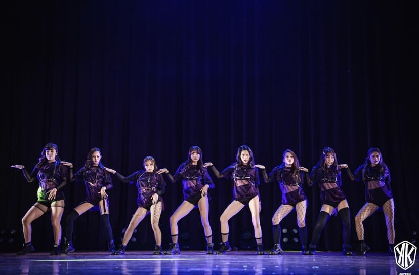
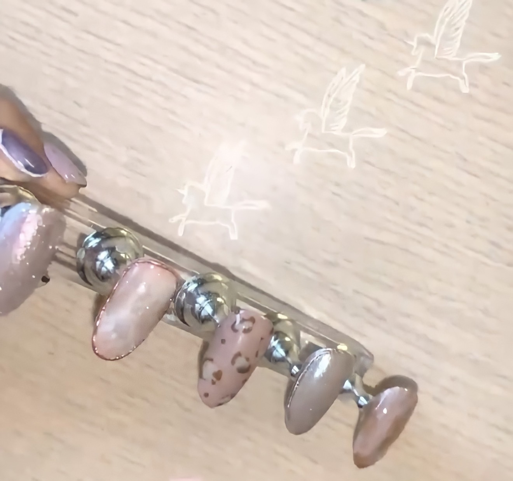
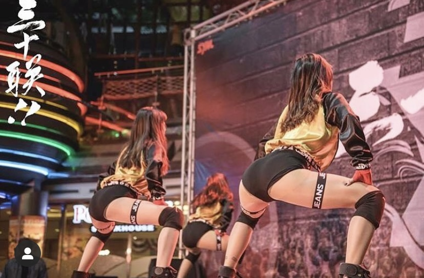
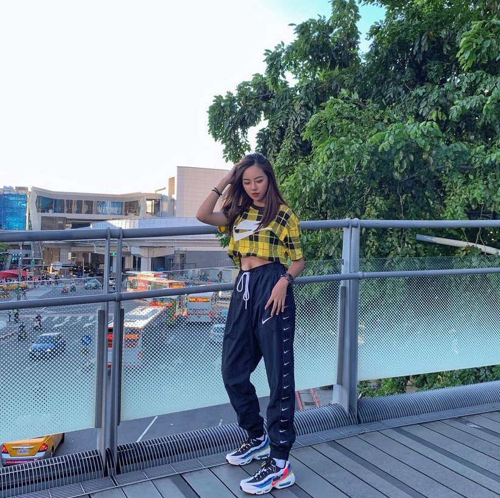
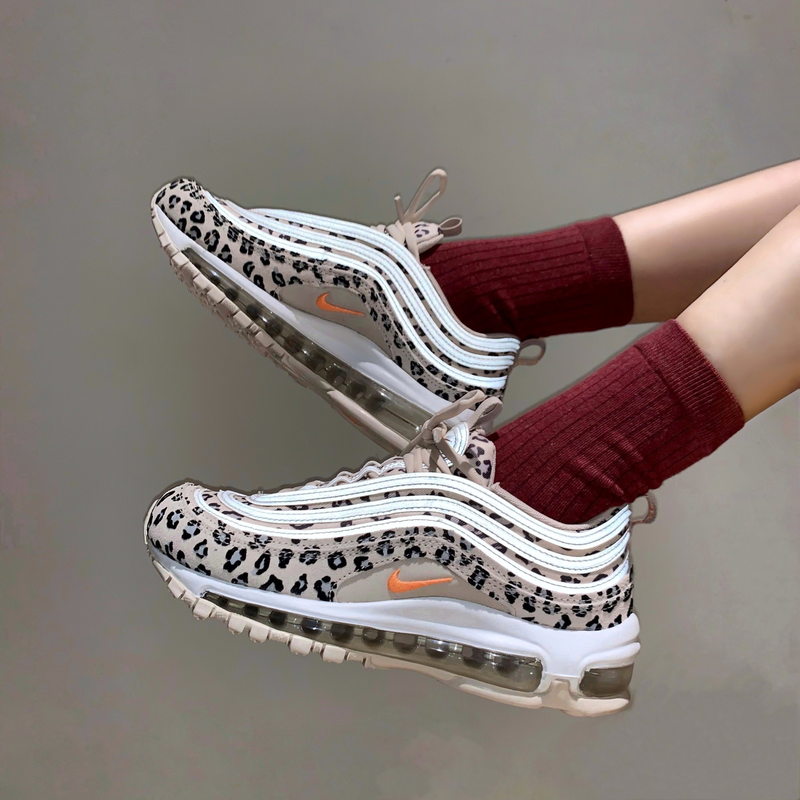
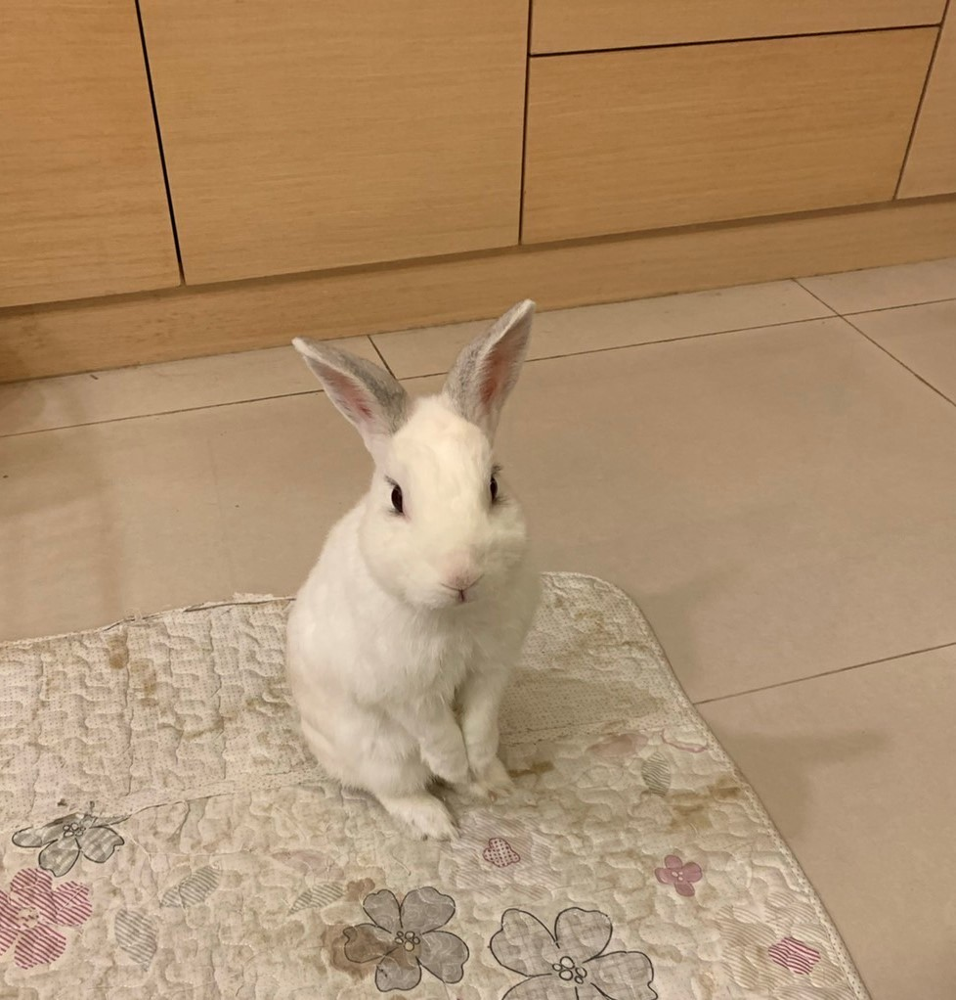
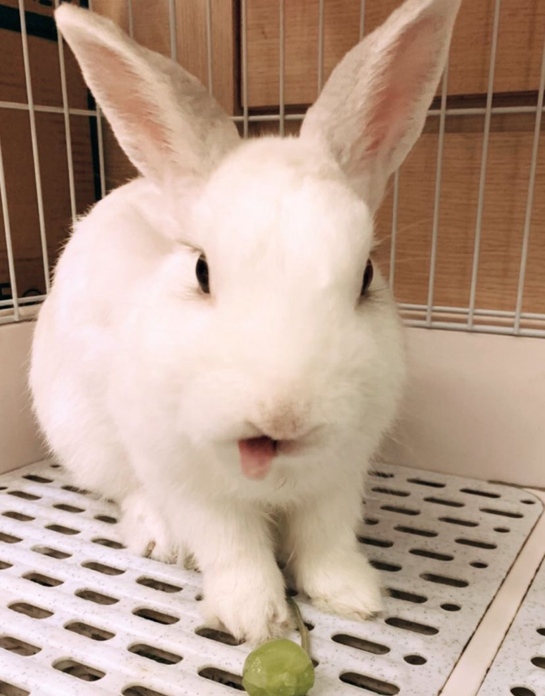

個人興趣
從小最大的興趣就是跳舞，高中進舞社就開始了我的跳舞人生。
每天都沒有假日也沒有寒暑假的練習、排舞。
雖然很累，但只要站在舞台上表演就會很開心也很有成就感。
再來就是我第二個興趣
一開始會學這個是因為
覺得指甲油很容易就掉
要等它乾又要等很久，變化也不多
後來去給店家做光療
突然就愛上了
但要特別空時間去 又很貴
不如在家自己想做就做
後來就變成我的興趣之一。
經歷
表演
-2017/03/12 高中職升學博覽會
-2017/05/18 金甌女中校內成發
-2017/07/20 逆 Dark famyly 三校聯合舞展
-2017/08/24 基隆高中社團招生
-2017/10/29 舞法舞天 熱舞迎新
-5017/11/12 高校嘉年華
-2017/12/09 高校三十聯
-2017/12/29 北大晚會
-2017/12/30 soul party
-2018/02/08 八校聯合迎新
-2018/04/14 大安高工校慶
-2018/05/17 金甌女中校內成發
-2018/05/28 時雨中學晚會
-2018/07/12 繁星 Stargazing 三校聯合成發
-2018/11/10 金甌女中校慶
-2018/12/14 金甌女中成年禮
-2019/01/19 公司尾牙
-2019/05/23 金甌女中校內成發
-2019/07/03 頑Now 三校聯合舞展
工作
 -2018 50嵐
-2019 板橋大遠百 Nike
-2021 信義A13 Nike信義A13 Nike
寵物
 他是我從國小五年級就養到現在的兔子，代表他也11歲了
他叫阿寶，說實話，我也不知道為甚麼是這個名字
他長的一臉可愛樣，可是他很搞笑
有時候也很兇，在家還不給抱
好像很多人都覺得兔子聽不懂人話，其實他是聽得懂的唷
每次叫他，他都會轉過來，也會跑過來
偷偷說一個他最可愛的地方
每次只要我回家他都會先跑去我房間門口等我開門。